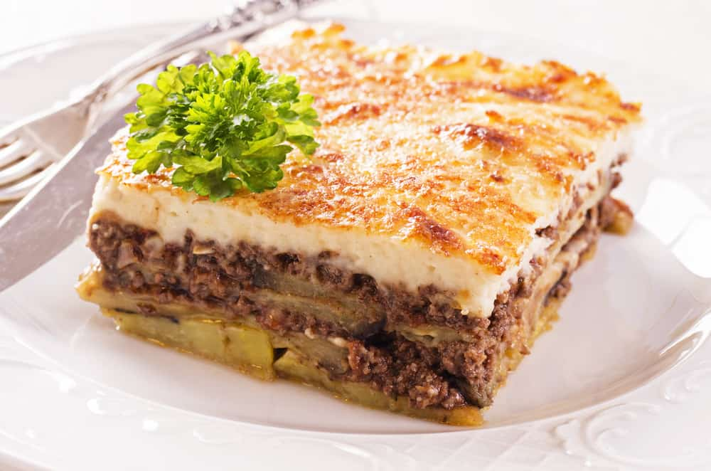

Mousakas
Home

Description
One of the most common and delicious greek recipes. Similar to
pastitsio.
Ingridients
- Milk
- Eggs
- Eggplants
- Minced Beef
- Cheese
Steps
- Prepare the minced beef,Cook for 30 minutes
- Prepare the cream
- Bake the eggplants
- Add layers of pasta and beef. Two layes of each
- Add the cream on top along woth grated cheese and bake